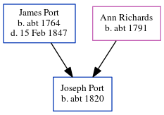

Joseph Port c1820 -
[ Home ] | [ Calendar ] | [ Surnames Index ] | [ Census Index ] | [ Family History ]The child of James Port and Ann Richards, Joseph Port, the four times great-uncle of Nigel Horne, was born c. 1820 and baptized in Herne, Kent, England on Jan 2, 1820.
Parents
- James was born c. 1764
- Ann was born c. 1791
Media
England Births & Baptisms 1538-1975 - R_884303100
England Births & Baptisms 1538-1975 - R_884934024
Kent Baptisms - GBPRS/CANT/B/96125218
Family Tree
Generated by ged2site. Last updated on Jun 11, 2024